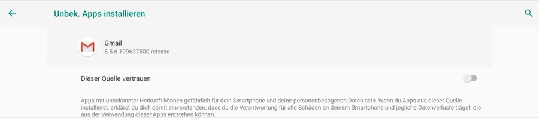
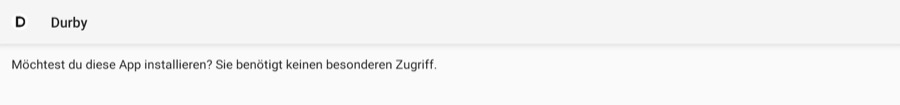
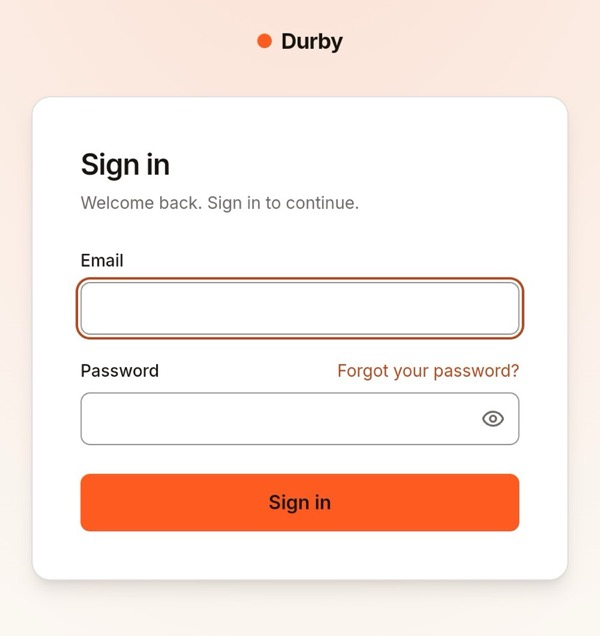
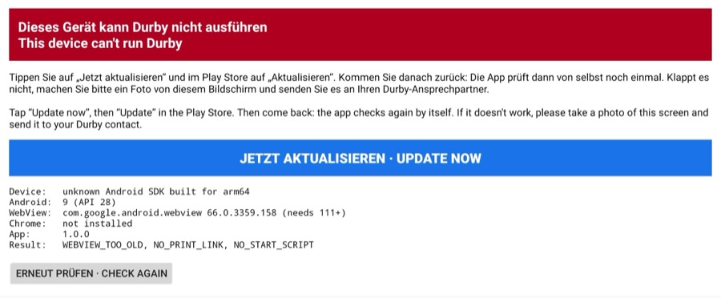

Dauer: etwa 5 Minuten. Die Kasse braucht Internet. Halten Sie Ihre Durby-Anmeldung (E-Mail und Passwort) bereit. Den Drucker richten wir danach aus der Ferne ein, Sie müssen dafür nichts tun.
Öffnen Sie an der Kasse in Chrome diesen Link: LINK
Tippen Sie auf Herunterladen. Warnt Chrome, dass diese Art von Datei
schädlich sein kann, bestätigen Sie trotzdem (je nach Version
Herunterladen oder OK).
Tippen Sie danach unten auf Öffnen (oder in den Benachrichtigungen auf die Datei).
Erscheint „Aus Sicherheitsgründen … keine unbekannten Apps aus dieser Quelle“, tippen Sie auf Einstellungen, schalten Dieser Quelle vertrauen ein und tippen auf Zurück ◀.

Bei Ihnen steht hier „Chrome“ statt „Gmail“.
Tippen Sie auf Installieren und danach auf Öffnen.

Die Durby-Anmeldung erscheint. Melden Sie sich mit Ihrer E-Mail und Ihrem Passwort an. Fertig: Ab jetzt öffnen Sie Durby über das Symbol D auf dem Startbildschirm.

Dann ist ein Teil von Android zu alt. Tippen Sie auf den blauen Knopf Jetzt aktualisieren und im Play Store auf Aktualisieren. Kommen Sie danach zur Durby-App zurück: Sie prüft von selbst noch einmal.
Fragt der Play Store nach einem Google-Konto, melden Sie sich mit dem Google-Konto der Kasse an.
Klappt es nicht oder fehlt der blaue Knopf: Machen Sie ein Foto vom ganzen Bildschirm und senden Sie es uns. Verändern Sie sonst nichts.
